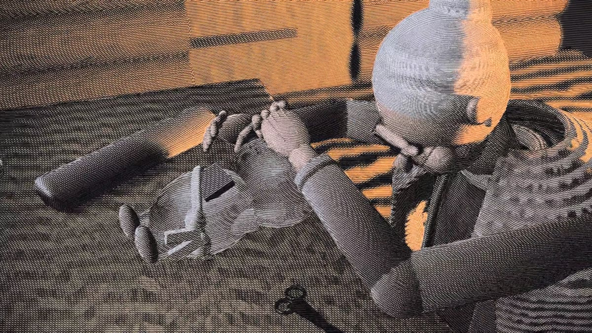
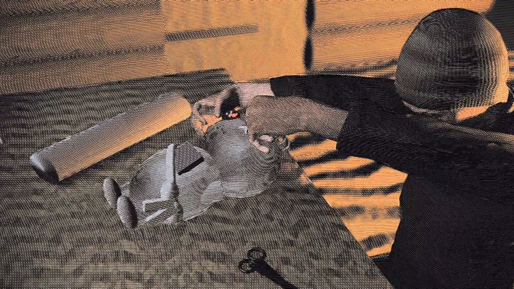
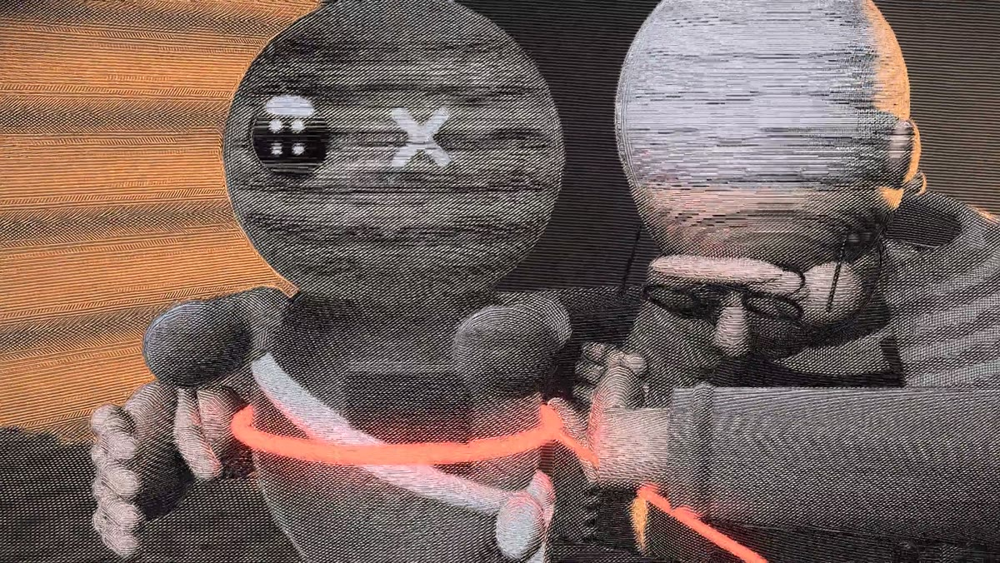
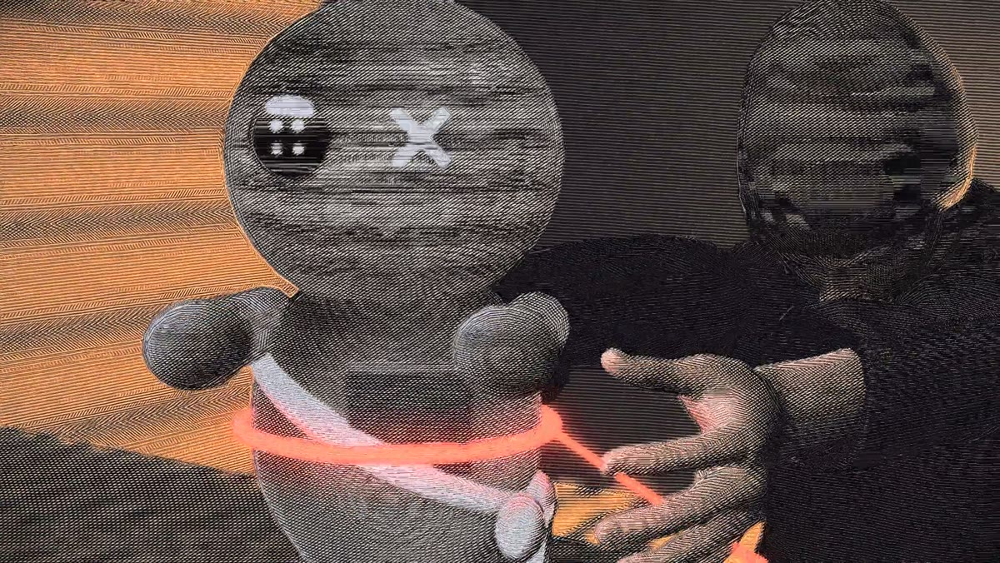
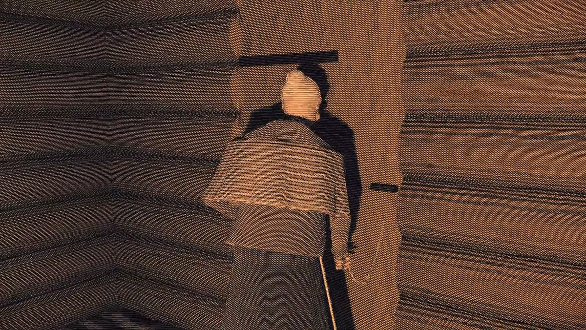
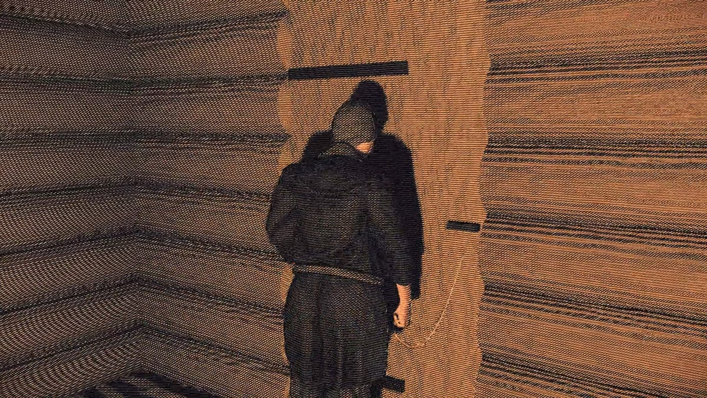
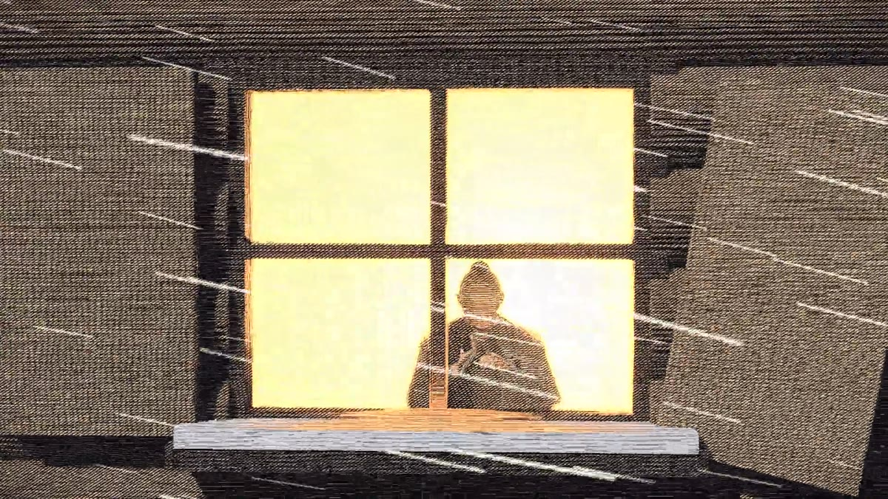
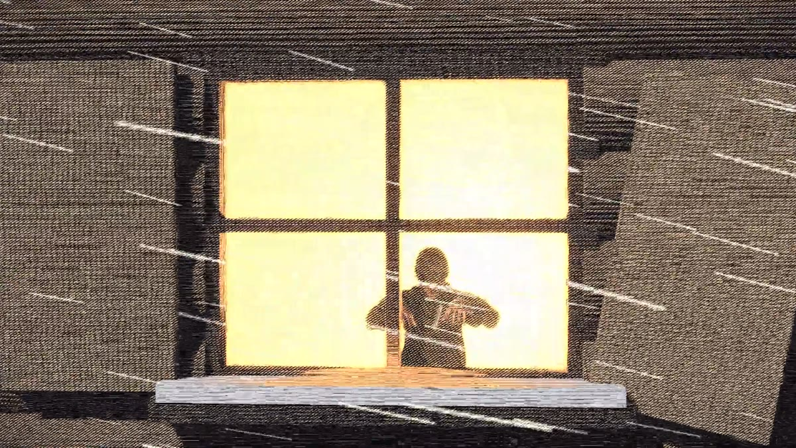

The model you foundin every shot she was in, and in the game
The rigged old lady you downloaded is now the knitter. She replaces the figure I had built out of spheres and tubes in every film shot she appears in: five in the prologue and two in the epilogue. Both films were re-rendered and re-cut. She also appears in the game itself now, in the deep. I've left her out of this page so you meet her there.
I've downloaded a 3D model of an old lady, I think she fits quite well. It's in the folder next to the repo, it's fully rigged. Please use it in the game.


BeforeAfterDrag the thread to compare


BeforeAfterDrag the thread to compare


BeforeAfterDrag the thread to compare


BeforeAfterDrag the thread to compare
The epilogue shots she is in were redone the same way. They're not shown here, as you asked.
Every shot was written for the old figure's joints: a stoop, a nod of the head, arms placed by inverse kinematics, and fingers curled into a relaxed hand, a hold, a grip or a pinch. Rather than re-animate every shot by hand, I rebuilt that same invisible skeleton at her joints, taken from her rig, and every bone of the model follows it. So the shots pose her exactly as they posed the old figure, but with her arm lengths, her shoulders and her real five-fingered hands. Her face, cap, scarf and clothes are the model's own.
Her arms are fuller than the old figure's, so the clipping checker (now able to split her skinned meshes into arms, head and body by bone weights) found new problems: forearms through the table and hands into each other while knitting, a palm through the doll, a sleeve brushing her face. Each was fixed by moving the hands or the head, then re-checked:
| Shot | First check with the model | After fixes |
|---|---|---|
| Knitting at the window | hands through each other and the knitting | clean |
| Stitching the doll | palm through the doll's head; sleeve through her own face | fingertips on the doll, a sleeve touching her cap |
| Looking up at the window | both forearms through the table | clean |
| Tying the red thread | forearms through the table; one hand into the doll | table clean; the far hand touches the doll's back, hidden from the camera |
| At the door, walking out | clean | clean |
| Two epilogue shots | a hand into the doll | clean |
scripts/cine/oldlady.pyImports the model, builds the control skeleton at her joints and makes her bones follow it.scripts/cine/lib.pyknitter() now builds her; the old figure is kept as knitter_proc (USE_MODEL = False brings it back).scripts/cine/sprites.pyRenders the pictures of her the game uses, as grey tone for the engraving.scripts/cine/clipcheck.pySplits the model's meshes by bone weight so arms, head and body can be tested against each other.../old-lady-fbx/The model stays where you put it; the scripts read it from there. It's not copied into the repo.